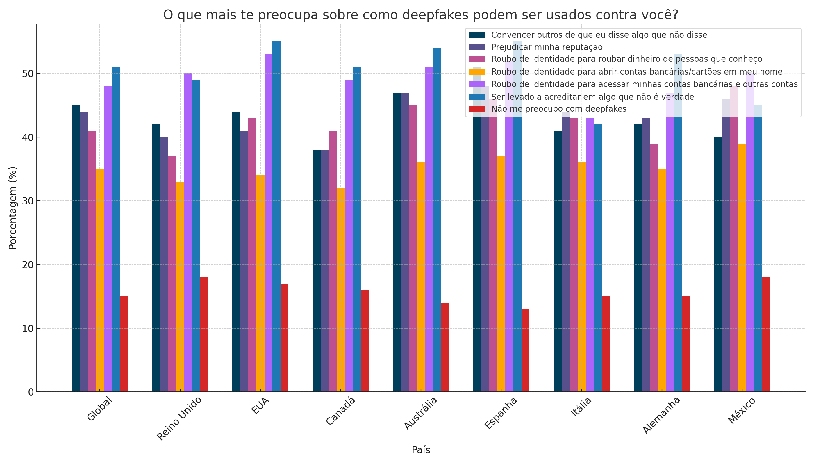

Deepfakes são uma forma de inteligência artificial que utiliza redes neurais profundas (deep learning) para criar vídeos, áudios e imagens falsas que parecem completamente reais. A tecnologia funciona através de um processo chamado "redes adversárias generativas" (GANs), onde duas redes neurais "competem" entre si: uma tenta criar conteúdo falso cada vez mais convincente, enquanto a outra tenta detectar as falsificações.
Como funciona: Milhares de imagens ou horas de áudio são processadas por algoritmos que aprendem padrões específicos de uma pessoa, permitindo recriar sua aparência ou voz de forma extremamente realista.
🎥 Vídeo Explicativo: Como os Deepfakes São Criados
Tipos Principais:
Deepfakes de Vídeo: Substituição facial em vídeos
Deepfakes de Áudio: Clonagem de voz
Deepfakes de Imagem: Criação de fotos de pessoas que não existem
Deepfakes de Texto: Geração de textos no estilo de alguém específico
Usos Positivos vs. Riscos
🌟 Aplicações Positivas
Cinema: Efeitos especiais revolucionários e ressurreição digital de atores
Medicina: Simulações para treinamento médico e terapia de fala
Acessibilidade: Tradução em tempo real preservando expressões faciais
Arte: Performances criativas e preservação cultural
Educação: Aulas interativas com figuras históricas
Entretenimento: Dublagem mais natural e personalizada
Política: Manipulação de eleições e opinião pública
Privacidade: Criação não autorizada de conteúdo íntimo
Justiça: Evidências falsas em processos legais
Confiança Social: Erosão da credibilidade em mídias digitais
📊 Infográfico: Estatísticas sobre o Impacto dos Deepfakes

Casos Reais e Exemplos
📺 Exemplos Positivos:
Cinema: O filme "O Irlandês" da Netflix utilizou tecnologia similar para rejuvenescer digitalmente Robert De Niro, Al Pacino e Joe Pesci, evitando a necessidade de maquiagem pesada ou atores mais jovens.
Acessibilidade: A empresa Synthesia desenvolve avatares realistas para tradução em múltiplos idiomas, ajudando empresas a comunicar globalmente mantendo a naturalidade da comunicação.
⚠️ Casos Preocupantes:
Política: Durante períodos eleitorais, deepfakes de candidatos foram criados para simular declarações nunca feitas, influenciando a opinião pública.
Fraudes: Criminosos têm usado deepfakes de voz para se passar por executivos e autorizar transferências bancárias milionárias.
🎬 Galeria de Exemplos Famosos
📺 Obama - PSA Deepfake (2018)
Buzzfeed criou um deepfake educativo do ex-presidente Obama para alertar sobre os perigos da tecnologia.
Sinais visíveis: Movimento labial ligeiramente desincronizado, textura da pele muito uniforme
🎭 Tom Cruise no TikTok (2021)
Série viral de vídeos extremamente convincentes que enganaram milhões de pessoas.
Sinais visíveis: Algumas expressões faciais não naturais, lighting inconsistente
👑 The Queen's Alternative Speech (2020)
Channel 4 criou um deepfake da Rainha Elizabeth como crítica social durante o Natal.
Sinais visíveis: Bordas do rosto ligeiramente borradas, piscar mecânico
⚠️ Dica Importante: Estes exemplos foram criados com propósito educativo ou artístico, mas mostram como a tecnologia pode ser usada de forma maliciosa. Sempre verifique a fonte!
🛡️ Como Se Proteger e Verificar
Em um mundo onde a realidade pode ser facilmente manipulada, desenvolver senso crítico é essencial!
🔍 Observe Detalhes
Procure por inconsistências em movimento dos olhos, piscar não natural, bordas do rosto mal definidas
🎵 Analise o Áudio
Verifique se o áudio está perfeitamente sincronizado e se há qualidade consistente na voz
📱 Use Ferramentas
Utilize detectores online como Deepware Scanner ou Microsoft Video Authenticator
📰 Verifique Fontes
Confirme a informação em múltiplas fontes confiáveis antes de compartilhar
🤔 Questione
Se algo parece "bom demais para ser verdade" ou muito impactante, investigue mais
📚 Eduque-se
Mantenha-se atualizado sobre as últimas técnicas de detecção e casos conhecidos
💭 Reflexão Final:
"Se não podemos mais confiar completamente no que vemos e ouvimos, como devemos redefinir nossa relação com a verdade e a informação na era digital?
Qual é nossa responsabilidade individual e coletiva para preservar a confiança em nossa sociedade?"
🎯 Sua Missão: Compartilhe este conhecimento! Ajude outras pessoas a desenvolverem consciência crítica sobre deepfakes. A educação é nossa melhor defesa contra a desinformação.